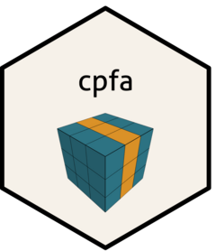

Classification Performance Measures
cpm.RdCalculates multiple performance measures for binary or multiclass classification. Uses known class labels and evaluates against predicted labels.
Arguments
- x
Known class labels of class numeric, factor, or integer. If factor, converted to class integer in the order of factor levels with integers beginning at 0 (i.e., for binary classification, factor levels become 0 and 1; for multiclass, levels become 0, 1, 2, etc.).
- y
Predicted class labels of class numeric, factor, or integer. If factor, converted to class integer in the order of factor levels with integers beginning at 0 (i.e., for binary classification, factor levels become 0 and 1; for multiclass, levels become 0, 1, 2, etc.).
- level
Optional argument specifying possible class labels. For cases where
xorydo not contain all possible classes. Can be of class numeric, integer, or character. Must contain two elements for binary classification, and contain three or more elements for multiclass classification. If integer, integers should be ordered (e.g., binary withc(0, 1); or three-class withc(0, 1, 2)). Note: if bothxandyjointly contain only a single value (e.g., 1), must specify argumentlevelin order to identify classification as binary or multiclass.- fbeta
Optional numeric argument specifying beta value for F-score. Defaults to
fbeta = 1, providing an F1-score (i.e., the balanced harmonic mean between precision and recall). Can be any real number.- prior
Optional numeric argument specifying weights for classes. Currently only implemented with multiclass problems. Defaults to
prior = c(rep(1/llev, llev)), wherellevis the number of classes, providing equal importance across classes.
Details
Selecting one class as a negative class and one class as a positive class, binary classification generates four possible outcomes: (1) negative cases classified as positives, called false positives (FP); (2) negative cases classified as negatives, called true negatives (TN); (3) positive cases classified as negatives, called false negatives (FN); and (4) positive cases classified as positives, called true positives (TP).
Multiple evaluation measures are calculated using these four outcomes. Measures include: overall error (ERR), also called fraction incorrect; overall accuracy (ACC), also called fraction correct; true positive rate (TPR), also called recall, hit rate, or sensitivity; false negative rate (FNR), also called miss rate; false positive rate (FPR), also called fall-out; true negative rate (TNR), also called specificity or selectivity; positive predictive value (PPV), also called precision; false discovery rate (FDR); negative predictive value (NPV); false omission rate (FOR); and F-score (FS).
In multiclass classification, the four outcomes are possible for each individual class in macro-averaging, and performance measures are averaged over classes. Macro-averaging gives equal importance to all classes. For multiclass classification, calculated measures are currently only macro-averaged. See the listed reference in this help file for additional details on micro-averaging.
For binary classification, this function assumes a negative class and a positive class (i.e., it contains a reference group) and is ordered. Multiclass classification is currently assumed to be unordered.
Computational details:
ERR = (FP + FN) / (TP + TN + FP + FN).
ACC = (TP + TN) / (TP + TN + FP + FN), and ACC = 1 - ERR.
TPR = TP / (TP + FN).
FNR = FN / (FN + TP), and FNR = 1 - TPR.
FPR = FP / (FP + TN).
TNR = TN / (TN + FP), and TNR = 1 - FPR.
PPV = TP / (TP + FP).
FDR = FP / (FP + TP), and FDR = 1 - PPV.
NPV = TN / (TN + FN).
FOR = FN / (FN + TN), and FOR = 1 - NPV.
FS = (1 + beta^2) * ((PPV * TPR) / (((beta^2)*PPV) + TPR)).
All performance measures calculated are between 0 and 1, inclusive. For multiclass classification, macro-averaged values are provided for each performance measure. Note that 'beta' in FS represents the relative weight such that recall (TPR) is beta times more important than precision (PPV). See reference for more details.
Value
Returns list where first element is a full confusion matrix cm and where
the second element is a data frame containing performance measures. For
multiclass classification, macro-averaged values are provided (i.e., each
measure is calculated for each class, then averaged over all classes; the
average is weighted by argument prior if provided). The second list
element contains the following performance measures:
- cm
A confusion matrix with counts for each of the possible outcomes.
- err
Overall error (ERR). Also called fraction incorrect.
- acc
Overall accuracy (ACC). Also called fraction correct.
- tpr
True positive rate (TPR). Also called recall, hit rate, or sensitivity.
- fpr
False positive rate (FPR). Also called fall-out.
- tnr
True negative rate (TNR). Also called specificity or selectivity.
- fnr
False negative rate (FNR). Also called miss rate.
- ppv
Positive predictive value (PPV). Also called precision.
- npv
Negative predictive value (NPV).
- fdr
False discovery rate (FDR).
- fom
False omission rate (FOR).
- fs
F-score. Mean between TPR (recall) and PPV (precision) varying by importance given to recall over precision (see Details section and argument
fbeta).
References
Sokolova, M. and Lapalme, G. (2009). A systematic analysis of performance measures for classification tasks. Information Processing and Management, 45(4), 427-437.
Examples
########## Parafac example with 3-way array and binary response ##########
if (FALSE) { # \dontrun{
# set seed and simulate a three-way array related to a binary response
set.seed(5)
# define target correlation matrix for columns of C mode weights matrix
cormat <- matrix(c(1, .6, .6, .6, 1, .6, .6, .6, 1), nrow = 3, ncol = 3)
# define list of arguments specifying distributions for A and G weights
techlist <- list(distA = list(dname = "poisson",
lambda = 3), # for A weights
distG = list(dname = "gamma", shape = 2,
scale = 4)) # for G weights
# simulate a three-way array connected to a response
data <- simcpfa(arraydim = c(11, 12, 100), model = "parafac", nfac = 3,
nclass = 2, nreps = 1e2, onreps = 10, corresp = rep(.6, 3),
meanpred = rep(2, 3), modes = 3, corrpred = cormat,
technical = techlist, smethod = "eigende")
# initialize
alpha <- seq(0, 1, length = 2)
gamma <- c(0, 0.01)
cost <- c(1, 2)
method <- c("PLR", "SVM")
family <- "binomial"
parameters <- list(alpha = alpha, gamma = gamma, cost = cost)
model <- "parafac"
nfolds <- 3
nstart <- 3
# constrain first mode weights to be orthogonal
const <- c("orthog", "uncons", "uncons")
# fit Parafac models and use third mode to tune classification methods
tune.object <- tunecpfa(x = data$X[, , 1:80], y = data$y[1:80],
model = model, nfac = 3, nfolds = nfolds,
method = method, family = family,
parameters = parameters, parallel = FALSE,
const = const, nstart = nstart)
# predict class labels
predict.labels <- predict(object = tune.object, newdata = data$X[, , 81:100],
type = "response")
# calculate performance measures for predicted class labels
y.pred <- predict.labels[, 1]
yproc <- as.numeric(data$y[81:100]) - 1
evalmeasure <- cpm(x = yproc, y = y.pred)
# print performance measures
evalmeasure
} # }